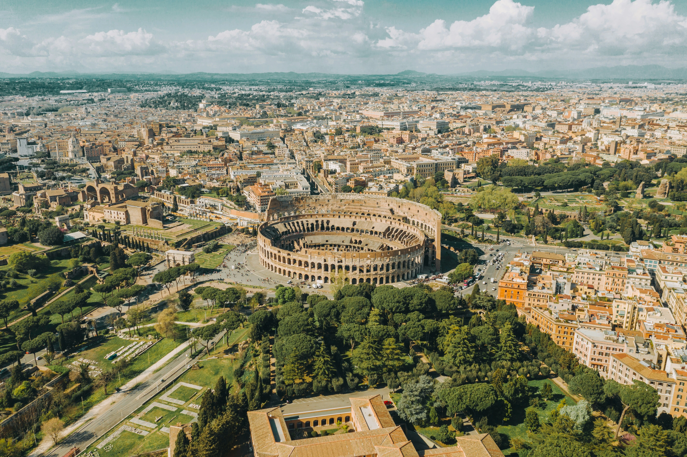
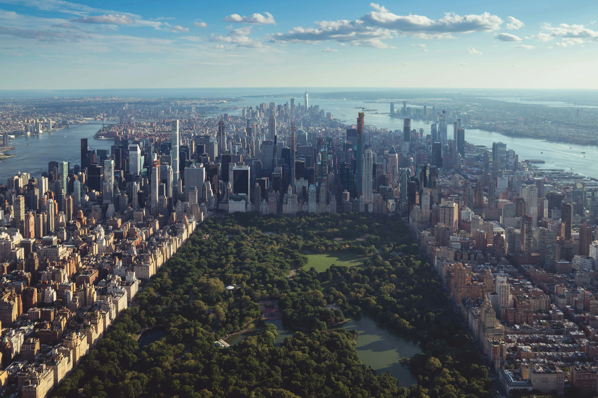
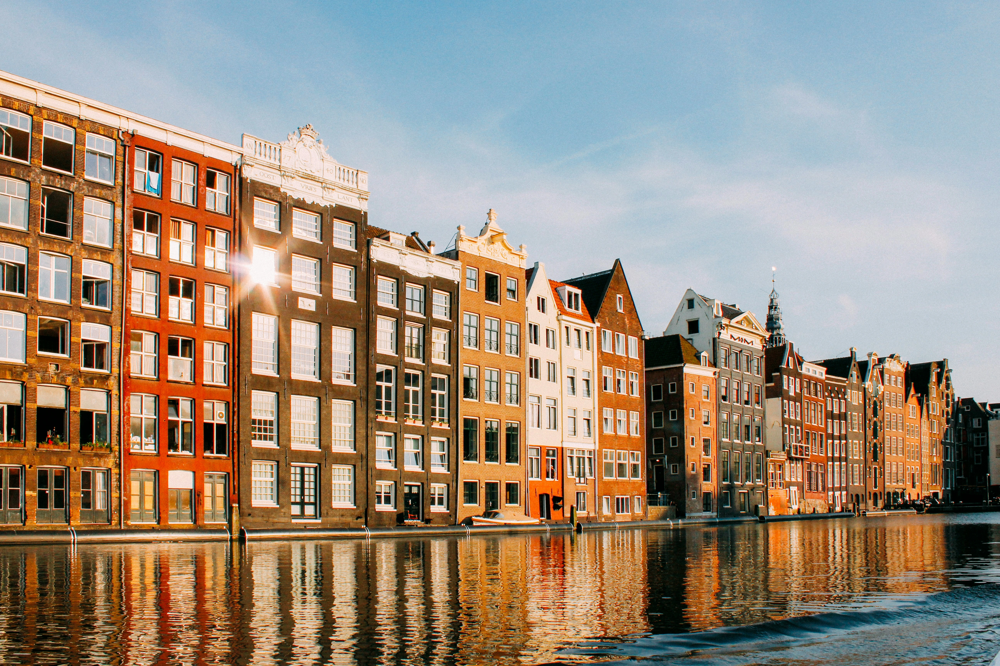
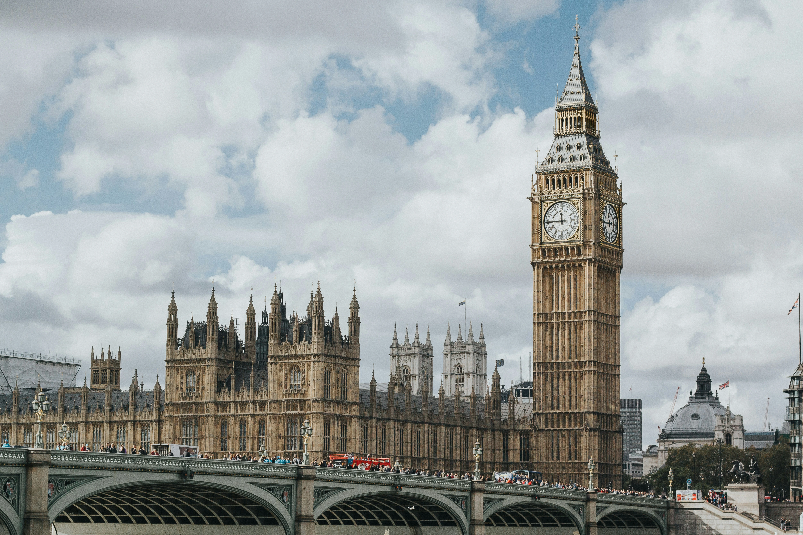
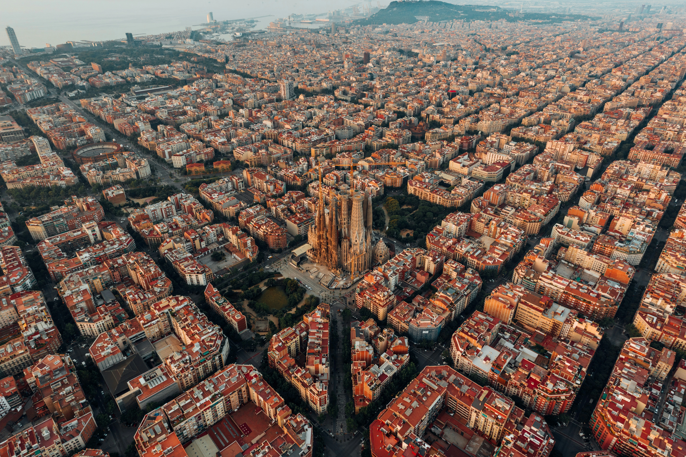

01 / 05Italia · 4 días
Roma
Una ciudad para caminar sin mapa, entre piedra antigua, plazas inesperadas y sobremesas que se alargan.
Planear este viajeDesliza para continuar

02 / 05Estados Unidos · 7 días
Nueva
York
La ciudad que nunca se queda quieta. Barrios, galerías y rincones para mirar hacia arriba.
Planear este viajeDesliza para continuar

03 / 05Países Bajos · 4 días
Ámsterdam
Canales tranquilos, diseño, bicicletas y una forma distinta de moverse por la ciudad.
Planear este viajeDesliza para continuar

04 / 05Reino Unido · 5 días
Londres
Una mezcla de barrios, librerías, música y parques para descubrir la ciudad a tu propio ritmo.
Planear este viajeDesliza para continuar

05 / 05España · 4 días
Barcelona
Mediterráneo, arquitectura y vida de barrio en una ciudad que siempre guarda otra esquina.
Planear este viaje